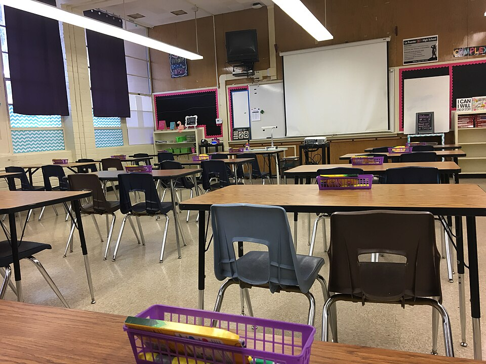

학교 교실 · 사진: Mercedes Steph / Wikimedia Commons, CC BY-SA 4.0
국제학교 학부모 상담(Parent-Teacher Conference) — 15분 안에 무엇을 묻고 무엇을 남길까
1. 상담은 한 종류가 아니다
먼저 우리가 지금 어떤 자리에 가는지를 구분해야 합니다. 학교마다 이름과 운영이 다르지만, 대체로 다음 세 가지가 섞여 있습니다.
· 정기 상담 — 학기마다 정해진 기간에 예약제로 진행되는 것이 일반적입니다. 초등은 담임 한 분과 길게, 중등·고등은 과목별 선생님을 차례로 만나는 형태가 흔합니다. 이 자리는 전체를 훑는 자리입니다.
· 요청 상담 — 정기 기간이 아니어도 걱정되는 일이 있으면 담임이나 학년 담당자에게 따로 면담을 요청할 수 있는 경우가 많습니다. 이 자리가 실제로는 훨씬 유용합니다. 시간 제약이 덜하고 주제가 하나로 좁혀지기 때문입니다.
· 학생 주도 상담 — 학생이 자기 과제물을 놓고 직접 설명하는 형태를 운영하는 학교도 있습니다. 이 자리에서는 부모가 질문을 아이에게 하게 됩니다.
※ 운영 방식·명칭·시간은 학교마다 다릅니다. 학교 안내를 확인하세요. 정기 상담이 짧아 아쉬웠다면, 같은 학기에 요청 상담을 한 번 더 잡는 것이 가장 현실적인 해법입니다.
2. 한국 학부모님이 특히 어려워하는 지점
· 시간이 너무 짧다. 한 과목에 10~15분이면 인사와 마무리를 빼고 실제로는 대화가 몇 마디 뿐입니다. 즉석에서 질문을 떠올리기로는 시간이 모자랍니다.
· 영어로 진행된다. 특히 학습 용어가 섞이면 알아듣기 어렵고, 되묻기가 망설여집니다.
· 선생님이 여러 명이다. 중등 이상이면 과목마다 다른 이야기를 듣게 되어, 집에 돌아오면 무엇이 문제였는지 흐려집니다.
· 칭찬을 그대로 받아들이게 된다. 영어권 학교의 상담은 강점부터 말하고 개선점을 뒤에 붙이는 화법이 일반적입니다. 앞부분만 기억에 남으면 "문제가 없다"로 들립니다.
· 무엇을 물어도 되는지 모른다. 성적 외에 물어봐도 되는지, 요청을 해도 되는지 판단이 서지 않습니다. 결론부터 말씀드리면 물어보셔도 됩니다. 학교는 부모가 내용을 정확히 아는 편이 아이에게 좋다고 봅니다.
3. 상담 전에 준비할 세 가지
📄 ① 성적표와 과제 기록을 먼저 본다
상담은 새 정보를 듣는 자리가 아니라 이미 있는 정보를 해석하는 자리입니다. 최근 성적표와 학교 과제 플랫폼 기록을 먼저 보시고, 점수가 낮았던 항목 두세 개를 적어 두세요. 기준표(rubric) 채점이라면 어느 항목에서 깎였는지가 대체로 표시되어 있습니다. → 성적표 읽는 법
🗣️ ② 아이에게 먼저 세 가지를 물어본다
선생님을 만나기 전에 아이의 시각을 확보하는 편이 좋습니다. 이 세 가지면 충분합니다.
· 수업에서 지시를 놓쳐 멈춘 적이 있는지
· 어느 과목의 과제가 가장 오래 걸리는지
· 선생님께 질문을 해 본 적이 있는지
아이가 말하는 어려움과 선생님이 보는 어려움이 어긋나는 지점이 대체로 진짜 문제입니다.
✍️ ③ 질문을 세 개에서 다섯 개, 문장으로 적어 간다
영어가 걱정되시면 영어 문장으로 적어 가세요. 짧은 문장 다섯 개만 있어도 상담의 밀도가 완전히 달라집니다. 통역이나 동석 지원이 가능한지 예약할 때 미리 문의해 보시는 것도 좋습니다. 요청은 실례가 아닙니다.
4. 이렇게 물으면 이런 답이 돌아온다
같은 것을 물어도 범위를 좁히면 답이 달라집니다. 실제로 상담에서 차이가 컸던 예를 표로 정리했습니다.
| 넓은 질문 (답이 뭉뚱그려짐) | 좁힌 질문 (쓸 만한 답이 나옴) |
|---|---|
| 우리 아이 어떤가요? | 최근 과제 중 점수가 가장 낮았던 항목이 무엇이었나요? |
| 영어는 괜찮나요? | 수업 중 지시를 이해하지 못해 멈추는 장면이 있나요? |
| 수학을 잘하나요? | 계산은 맞는데 풀이 서술에서 점수가 깎이는 편인가요? |
| 숙제는 잘 내나요? | 기한을 놓친 과제가 있었나요? 있었다면 어느 과목인가요? |
| 다음 학기 잘할까요? | 다음 학기에 이 과목을 계속하려면 지금 무엇이 부족한가요? |
| 집에서 뭘 하면 되나요? | 집에서 한 가지만 한다면 무엇을 하는 게 좋을까요? |
오른쪽 질문들의 공통점은 "예·아니오"나 "항목 이름"으로 답할 수 있다는 것입니다. 그래서 15분 안에 다 물어볼 수 있습니다. 반대로 왼쪽 질문은 답이 길고 뭉뚱그려져서 시간만 쓰게 됩니다.
여기에 상황에 따라 더할 질문도 있습니다. 영어 지원을 받고 있거나 받을지 고민 중이라면 "지금 지원 대상인지, 언제 나가게 되는지"를 물어 두세요. 학습에 별도 지원이 필요하다는 이야기를 들으셨다면 그 자리에서 지원의 성격을 확인하는 편이 좋습니다. → EAL(영어 지원 프로그램) 완전정리 · Learning Support(학습 지원)
고등이라면 과목 선택과 대학 진학 쪽 질문이 더 중요해집니다. 다만 그 주제는 교과 선생님보다 진학 카운슬러의 영역인 경우가 많으니, 따로 면담을 잡는 편이 효율적입니다. → 진학 카운슬러 활용법 · IB DP 점수 · AP 과목 선택
5. 상담이 끝난 뒤 — 남기지 않으면 사라진다
가장 아깝게 버려지는 부분입니다. 여러 선생님을 만난 날은 저녁이면 이미 내용이 섞입니다. 상담이 끝나고 그 자리에서 3분만 쓰세요.
· 과목별로 한 줄씩 — "무엇이 부족하다고 했는지" 한 줄만 적습니다. 판단이나 대책은 나중에 하고, 지금은 선생님이 쓴 표현 그대로 적어 두는 게 좋습니다.
· 모르는 용어는 그 자리에서 되묻는다 — 상담 중에 이해하지 못한 말이 있으면 다시 설명해 달라고 부탁하세요. 끝난 뒤 요점을 메일로 정리해 보내 달라고 요청하셔도 됩니다.
· 다음 확인 시점을 정한다 — "언제쯤 다시 보면 변화가 확인되는지"를 물어 두면, 다음 상담까지 막연히 기다리지 않게 됩니다.
· 아이와 함께 읽는다 — 적어 온 한 줄들을 아이에게 보여 주고 같이 읽으세요. 이때 추궁이 아니라 확인의 자리로 만드는 게 중요합니다. 아이가 자기 이야기를 더할 수 있으면 그 상담은 성공한 것입니다.
6. 상담 메모를 과외에 연결하는 방법
저희가 수업을 시작할 때 가장 먼저 보는 자료가 성적표와 상담 메모입니다. "영어를 잘하게 해 주세요"보다 "에세이 기준표의 분석 항목에서 계속 깎인다고 하셨습니다" 한 줄이 훨씬 빠르게 수업을 바꿉니다.
· 기준표 항목이 적혀 있으면 그 항목만 놓고 훈련합니다. 에세이 전체를 다시 쓰는 것보다 훨씬 빠르게 점수가 움직입니다. (영어 공부법 참고)
· "계산은 되는데 서술이 없다"는 말이 있으면 풀이를 영어 문장으로 적는 훈련부터 합니다. 알지브라 개념을 다시 가르치는 일은 그다음입니다. (알지브라 공부법 참고)
· "기한을 놓친 과제가 있다"는 말이 있으면 실력이 아니라 일정 관리 문제입니다. 과제 플랫폼을 함께 보면서 주 단위로 나누는 연습을 합니다.
· "수업 중 지시를 놓친다"는 말이 있으면 과목별 지시어(analyze·evaluate·justify)를 정리합니다. 이 하나로 여러 과목이 함께 풀리는 경우가 많습니다.
해외에 계신 주재원 가정이라면 상담 기간과 화상수업 일정을 맞추기가 쉽습니다. 상담에서 들은 내용을 그 주에 바로 수업에 반영할 수 있기 때문입니다. → 국제학교 입학 준비 총정리
정리
국제학교 학부모 상담은 짧고, 영어로 진행되고, 선생님이 여러 명입니다. 이 세 조건을 인정하고 들어가면 준비할 것이 분명해집니다. ① 성적표와 과제 기록을 먼저 보고 ② 아이에게 세 가지를 먼저 묻고 ③ 좁힌 질문 다섯 개를 문장으로 적어 가고 ④ 끝나고 과목별 한 줄을 남기는 것. 이 네 단계면 "잘하고 있다고 하셨는데요"로 끝나지 않습니다. 상담 메모를 들고 오시면 30분 무료 상담에서 어느 항목부터 손대야 할지 함께 짚어 드립니다.